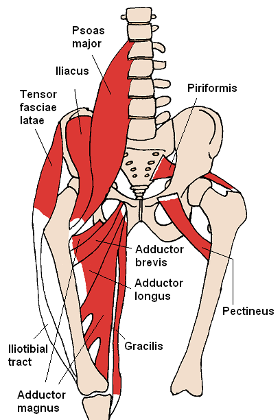

💪 Sức khỏe Nam giới
Nutrition — Mediterranean Diet & Sexual HealthDeep dive⏱ 8 phút đọc
Chế Độ Ăn Địa Trung Hải: Tấm Lá Chắn Nội Mô Cho Chức Năng Cương & Tim Mạch Nam Giới
Chức năng cương dương về bản chất là một hiện tượng thủy lực phụ thuộc hoàn toàn vào sức khỏe mạch máu. Nghiên cứu kinh điển của Giáo sư Katherine Esposito đăng trên tạp chí JAMA đã chứng minh: Chế độ ăn Địa Trung Hải giàu polyphenol, arginine và axit béo omega-3 có khả năng phục hồi chức năng cương ở hơn một phần ba nam giới mắc hội chứng chuyển hóa mà không cần can thiệp dược lý.
Động mạch hang dương vật là cửa sổ báo hiệu sớm nhất của toàn bộ hệ tuần hoàn. Chế độ ăn Địa Trung Hải bảo vệ lớp nội mô mạch máu bằng cách kích thích enzyme eNOS sản sinh Nitric Oxide, cải thiện độ đàn hồi vi mạch và giảm phản ứng viêm toàn thân.
Hiện Tượng Thủy Lực: Vì Sao "Cương Dương Là Một Sự Kiện Tim Mạch"?
Để đạt được sự cương cứng bình thường, cơ thể nam giới cần kích hoạt một chuỗi phản ứng sinh hóa mạch máu tinh vi:
1. Kích thích tình dục giải phóng chất dẫn truyền thần kinh Nitric Oxide (NO) từ các đầu tận cùng thần kinh không cholinergic (NANC) và lớp tế bào nội mô mạch máu.
2. Nitric Oxide khuếch tán vào các tế bào cơ trơn thể hang, hoạt hóa enzyme Guanylate Cyclase, làm tăng nồng độ phân tử truyền tin thứ hai cGMP (cyclic Guanosine Monophosphate).
3. cGMP làm giảm dòng canxi nội bào, khiến các cơ trơn tiểu động mạch hang giãn nở tối đa. Lưu lượng máu đổ dồn vào thể hang tăng vọt từ 2–3 ml/phút lên đến 20–40 ml/phút, tạo ra áp lực nén các tĩnh mạch dưới màng trắng và khóa dòng máu thoát ra ngoài.

📊 Động Học Tuần Hoàn Mạch Máu: Động mạch hang có kích thước siêu nhỏ (1–2 mm), do đó bất kỳ tổn thương nội mô hoặc mảng xơ vữa nào cũng sẽ biểu hiện thành rối loạn cương nhiều năm trước khi gây đau thắt ngực. Nguồn sơ đồ: Wikimedia Commons ↗
Trong một thử nghiệm lâm sàng ngẫu nhiên kéo dài 2 năm trên 110 nam giới mắc hội chứng chuyển hóa (Esposito et al., JAMA 2004), nhóm áp dụng chế độ ăn Địa Trung Hải thực thụ (giàu dầu olive nguyên chất, rau quả, các loại hạt và cá) so với nhóm đối chứng đã đạt được kết quả phi thường:
- Chỉ số Chức năng Cương Quốc tế (IIEF-5) tăng điểm đáng kể; hơn 35% nam giới bị rối loạn cương đã tự phục hồi khả năng quan hệ bình thường.
- Nồng độ các chất chỉ điểm viêm nội mô nhạy cao như hs-CRP và Interleukin-6 (IL-6) giảm hơn 30%.
- Độ giãn mạch qua trung gian dòng chảy (Flow-Mediated Dilation - FMD) tăng gấp đôi, phản ánh nội mô mạch máu đã lấy lại khả năng tổng hợp Nitric Oxide.
4 Trụ Cột Dinh Dưỡng Địa Trung Hải Tối Ưu Hóa Mạch Máu Nam Giới
Chống oxy hóa màng tế bào nội mô; bảo vệ phân tử NO không bị gốc tự do ROS phá hủy.
Dùng 30–50 ml (2–3 muỗng canh) mỗi ngày rưới trực tiếp lên salad hoặc thức ăn nguội.
Các Loại Quả Hạch (Hạnh nhân, Óc chó, Hạt dẻ)
L-Arginine tự nhiên & Magie
L-Arginine là cơ chất bắt buộc để enzyme eNOS tổng hợp Nitric Oxide; Magie hỗ trợ giãn cơ trơn.
Ăn một nắm nhỏ 30–40g hạt óc chó và hạnh nhân sống làm bữa phụ buổi chiều.
Cá Biển Béo (Hải sản đánh bắt tự nhiên)
Axit béo Omega-3 (EPA & DHA)
Tăng tính mềm dẻo của màng hồng cầu; hạ Triglyceride máu; ngăn ngừa huyết khối tiểu cầu.
Ăn cá hồi, cá thu, cá trích hoặc cá mòi ít nhất 2–3 bữa/tuần.
Rau Xanh Đậm & Quả Mọng (Cải bó xôi, Củ dền)
Nitrat vô cơ (Nitrates) & Anthocyanin
Vi khuẩn khoang miệng khử Nitrat thành Nitrit (NO₂⁻), chuyển thành NO trong máu mà không cần phụ thuộc vào enzyme eNOS.
Uống 150ml nước ép củ dền hoặc ăn 1 đĩa lớn cải bó xôi/xà lách arugula trước khi vận động.
Giao Thức 4 Bước Chuyển Đổi Lối Sống Địa Trung Hải
Thay Thế Hoàn Toàn Dầu Tinh Luyện Bằng Dầu Olive: Loại bỏ dầu đậu nành, dầu ngô công nghiệp giàu omega-6 gây viêm; chuyển sang dầu olive nguyên chất ép lạnh (EVOO).
Nạp Đủ Tiền Chất Nitric Oxide Mỗi Ngày: Kết hợp nguồn L-Arginine (hạt óc chó, thịt gia cầm) và Nitrat tự nhiên (củ dền, rau arugula) giúp hệ mạch máu luôn có sẵn nguồn cung NO dồi dào.
Tránh Nước Súc Miệng Diệt Khuẩn Mạnh: Các loại nước súc miệng chứa Chlorhexidine tiêu diệt các vi khuẩn có lợi ở lưỡi, làm mất khả năng chuyển đổi Nitrat thành Nitrit, khiến huyết áp tăng và giảm nồng độ NO trong máu.
Theo Dõi Chỉ Số Nhịp Tim Nghỉ Ngơi (RHR): Sự phục hồi của nội mô mạch máu sẽ phản ánh rõ ràng qua thiết bị đeo: nhịp tim nghỉ ngơi ban đêm hạ thấp từ 3–5 bpm và biến thiên nhịp tim (HRV) tăng rõ rệt sau 4–6 tuần tuân thủ chế độ ăn.
Tài Liệu Tham Khảo & Nguồn Y Khoa
Esposito, K., Giugliano, F., Di Palo, C., et al. (2004).Effect of lifestyle changes on erectile dysfunction in obese men: a randomized controlled trial. JAMA, 291(24), 2978–2984. Tạp chí JAMA (PMID: 15213207) ↗
Montorsi, P., Ravagnani, P. M., Galli, S., et al. (2006).Association between erectile dysfunction and coronary artery disease: role of carotid artery intimamedia thickness. European Urology, 49(5), 884–891. Tạp chí Eur Urol (PMID: 16530932) ↗
Di Luigi, L., et al. (2020).The Mediterranean Diet and Men's Health: An Evidence-Based Update. Nutrients, 12(8), 2373. Tạp chí Nutrients (PMID: 32784847) ↗
Lue, T. F. (2000).Erectile dysfunction. New England Journal of Medicine, 342(24), 1802–1813. Tạp chí NEJM (PMID: 10853004) ↗
📚
Nguồn Tham Khảo Y Khoa & Nghiên Cứu Gốc
Bài viết này được tổng hợp và kiểm chứng từ các nghiên cứu y sinh học, hướng dẫn lâm sàng và tài liệu khoa học thiết bị đeo của Journal of the American Medical Association (JAMA) & European Urology.
💪 Men's Health
Nutrition — Mediterranean Diet & Sexual HealthDeep dive⏱ 8 min read
The Mediterranean Diet: Endothelial Shield for Erectile Function & Longevity
Erectile function is fundamentally a hydraulic event dictated by endothelial vascular health. A landmark randomized trial by Prof. Katherine Esposito published in JAMA demonstrated that a Mediterranean dietary pattern rich in polyphenols, L-arginine, and omega-3 fatty acids reversed erectile dysfunction in over one-third of men with metabolic syndrome without pharmaceutical intervention.
The cavernosal arteries serve as the earliest canary in the coal mine for cardiovascular health. The Mediterranean diet preserves endothelial integrity by upregulating eNOS to produce Nitric Oxide, improving microvascular compliance and suppressing systemic inflammation.
The Hydraulic Imperative: Why Erection is Fundamentally a Cardiovascular Event
To achieve rigid erection, the male body must coordinate a delicate, high-pressure neurovascular cascade:
1. Erotic stimuli trigger the release of neurotransmitter Nitric Oxide (NO) from non-adrenergic non-cholinergic (NANC) nerve endings and endothelial cells.
2. Nitric Oxide diffuses directly into cavernosal vascular smooth muscle cells, activating the enzyme Guanylate Cyclase, which sharply elevates intracellular cyclic Guanosine Monophosphate (cGMP).
3. cGMP reduces intracellular calcium flux, prompting profound trabecular smooth muscle relaxation. Inflow into cavernosal sinusoids skyrockets from 2–3 mL/min up to 20–40 mL/min, generating massive intracavernosal pressure that compresses subtunical venules against the rigid tunica albuginea, hydraulically trapping blood within the corpora.
📊 Vascular Hemodynamics of Erection: Because cavernosal arteries are microvessels (1–2 mm), endothelial injury or early atheroma formation compromises erectile hydraulics years before angina manifests. Diagram source: Wikimedia Commons ↗
The Esposito JAMA Trial: Reversing Erectile Dysfunction at the Dinner Table
In a landmark 2-year randomized clinical trial involving 110 obese men with metabolic syndrome (Esposito et al., JAMA 2004), participants assigned to a genuine Mediterranean diet (rich in cold-pressed extra virgin olive oil, wild fatty fish, nuts, and fibrous plant polyphenols) achieved extraordinary clinical outcomes:
- International Index of Erectile Function (IIEF-5) scores increased significantly; over 35% of previously impotent men regained full, spontaneous erectile performance.
- High-sensitivity inflammatory biomarkers, notably hs-CRP and Interleukin-6 (IL-6), decreased by more than 30%.
- Endothelial Flow-Mediated Dilation (FMD) doubled, demonstrating that systemic blood vessels had re-established physiological eNOS nitric oxide synthesis.
4 Pillars of the Mediterranean Vascular Protocol
Dietary Pillar
Key Bioactive Compound
Endothelial & Erectile Mechanism
Clinical Execution
Extra Virgin Olive Oil (EVOO)
Oleocanthal, Hydroxytyrosol & Oleic Acid
Protects endothelial membranes against lipid peroxidation; shields NO from reactive oxygen species degradation.
Consume 30–50 mL (2–3 tbsp) raw daily drizzled over meals.
Raw Tree Nuts (Walnuts, Almonds)
L-Arginine & Magnesium
L-Arginine serves as the obligatory substrate for eNOS; magnesium facilitates smooth muscle relaxation.
Snack on 30–40g raw walnuts and almonds daily as an afternoon bridge.
Cold-Water Fatty Fish
Omega-3 PUFAs (EPA & DHA)
Enhances erythrocyte deformability, suppresses thromboxane A2, and curbs microvascular thrombosis.
Consume wild salmon, mackerel, or sardines 2–3 times per week.
Dark Leafy Greens & Beets
Dietary Inorganic Nitrates
Oral microbiome converts nitrates to nitrites (NO₂⁻), boosting systemic NO independent of eNOS enzymes.
Drink 150 mL fresh beet juice or consume generous arugula/spinach salads pre-workout.
4-Step Practical Protocol for Vascular Regeneration
Replace Industrial Seed Oils with EVOO: Discard inflammatory corn, soy, and cottonseed oils; anchor cooking exclusively around cold-pressed extra virgin olive oil.
Fuel Nitric Oxide Precursors Daily: Combine dietary L-Arginine (poultry, walnuts) with inorganic nitrates (beets, arugula) to keep systemic vasculature saturated with NO substrates.
Monitor Resting Heart Rate (RHR) Trends: Microvascular restoration directly manifests on wearable sensors: overnight resting heart rate descends by 3–5 bpm and HRV climbs consistently within 4–6 weeks of dietary adherence.
Clinical References & Scientific Sources
Esposito, K., Giugliano, F., et al. (2004).Effect of lifestyle changes on erectile dysfunction in obese men: a randomized controlled trial. JAMA, 291(24), 2978–2984. View on JAMA / PubMed ↗
Montorsi, P., Ravagnani, P. M., et al. (2006).Association between erectile dysfunction and coronary artery disease. European Urology, 49(5), 884–891. View on Eur Urol ↗
Di Luigi, L., et al. (2020).The Mediterranean Diet and Men's Health: An Evidence-Based Update. Nutrients, 12(8), 2373. View on PubMed ↗
Lue, T. F. (2000).Erectile dysfunction. New England Journal of Medicine, 342(24), 1802–1813. View on NEJM ↗
📚
Clinical Reference & Scientific Backing
This article is synthesized from peer-reviewed medical literature, clinical guidelines, and wearable biometric validation studies from Journal of the American Medical Association (JAMA) & European Urology.